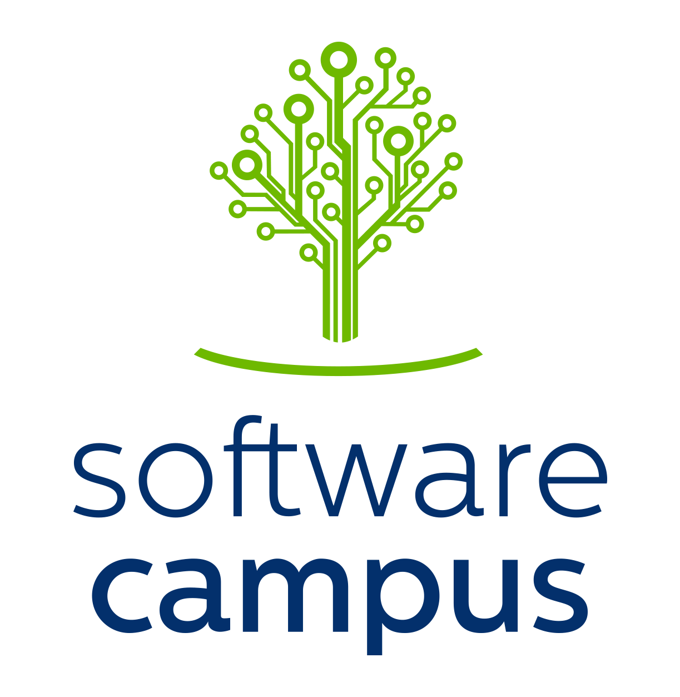

Today is the last day of my first bigger project, RealVNF, which I have been leading for 27 months (Nov. 2018 - Jan. 2021). Early 2018, I applied for the project through the Software Campus and received a €100k grant for hiring student research assistants, traveling, equipment, etc. I also had the opportunity to participate in several leadership trainings organized by companies across Germany. The project itself was research-focused and a collaboration with researchers from Huawei Germany (more info the website).
I found that leading the project was surprisingly challenging but, in the end, definitely successful and a great experience. This blog post reflects on the last 27 months and summarizes seven lessons learned from a leadership/project management perspective.

7 Lessons Learned
Put Effort Into Recruiting the Right People
Recruiting the right people for the project was very important. Most of the people I hired at the beginning stayed until the end of the project.
Initially, I posted the job openings broadly online and received many applications. I also directly asked talented people I knew to apply. To avoid interviewing dozens of applicants, I introduced a small programming exercise that applicants had to submit. It was doable in maybe 1-3 hours using basic Python and tools like GitHub. I invited applicants who finished this first task to an interview, asking them to read a selected research paper up front and prepare to summarize it during the interview.
Both tasks meant initial extra work for both me and the applicants but helped to select the most suitable candidates for the project. In the end, I got to work with motivated and talented people, who made the project a success.
Talk to Potential Users Early
When preparing the initial project plan, of course, I discussed it with people in my group at university. Still, it was only when talking to the researchers at Huawei, I understood that they had a very different perspective on the problem we were trying to solve. We spent the first months discussing and aligning our understanding of the problem and possible solution approaches. These discussions were very valuable to ensure that the work in the project was actually relevant and helpful in practice. As a leading company in networking, Huawei is a potential user of our developed coordination schemes and thus was an ideal project partner.
Especially in academia, it is easy to get excited about an idea without properly thinking (or even understanding) its relevance in practice. Whether in academia or industry, I believe it is very important to talk to potential users/customers early and understand their needs before designing a solution. This is related to the concept of design thinking.
Start Small, Scale Quickly
When starting the project, we had tons of interesting ideas and thought of a variety of relevant problem aspects that we wanted to address. Creating an approach from scratch that incorporates all ideas and considers all problem aspects would have been prohibitively complex. Instead, it was important to quickly identify the most important aspects and most promising ideas and simplify everything else. This helped to get started quickly.
Once the simple approach worked, we could extend it to integrate more ideas and address more problem aspects. It is also helpful to have a working prototype at all times: First for the smallest and simplest case, then for more and more complex scenarios. This allows running evaluations for each stage and quantifying progress. Trying to solve everything at once can be overwhelming and makes it difficult to understand the root cause of problems or bugs. Building on something that works already is much simpler, faster, and less error prone. Versioning everything allows going back to previous, working versions if something breaks in between.
Of course, it makes sense to think of a realistic roadmap and architecture at the beginning to have a clear direction and ensure that initial solutions can easily be extended later.
Focus on Just a Few Topics at Once
At the beginning, I was wondering whether I should assign all students working on the project to their own topic or to let them all work on the same topic. The former would allow more parallelization and independent work, thus less dependencies and blocking each other. Still, I found that it was much easier focusing all work on just one or two topics (of course, still with different tasks). Not only did it help drive progress faster, it also allowed more productive meetings and discussions between team members.
While this worked well for my project with 3-4 people, it will likely be different for much larger projects.
Planning is Everything. The Plan is Nothing.
Especially in a research-focused project like RealVNF, there is a lot of uncertainty, e.g., about experiment outcomes, where the outcome of one task affects the next one. This makes mid-/long-term planning very difficult.
I found it useful to have a high-level “storyline” in mind with intermediate milestones, but to frequently adjust it to new insights or results. When interpreting results and adjusting the plan, we always discussed and decided next steps in the group. It is important for motivation to not only understand what a task is about but also why it is relevant. In general, frequent and clear communication within the team was crucial to quickly adapt to new outcomes and avoid wasting time.
Clear, Frequent, and Open Communication Within the Team
Frequent communication with and within the team is crucial. Still, I did not want to waste everyone’s time with unnecessary meetings. For us, weekly group meetings worked quite well. I structured each meeting into status updates, discussion items, and tasks for the next week and tried to limit them to at most an hour. Upcoming tasks need to be communicated very clearly (goal, scope, time) to avoid misunderstandings. Sending out short notes after each meeting helped to keep everyone on the same page.
For an overview of past, current, and upcoming tasks, we also used GitHub issues and project boards (Kanban boards). Additionally, we defined high-level monthly goals/milestones to keep the project a bit more focused. To keep the discussion going during the week and quickly adapt to new experiment outcomes or new insights, we kept in touch via Slack constantly.
We also did individual feedback discussions every now and then, which were really useful. In retrospective, I would do one-to-one meetings more regularly to better understand each team member’s needs and interests. It is important to encourage open communication at all times such that team members say if they have too many or too few tasks. Both is demotivating. At the same time, it can be difficult to estimate how quickly someone will progress with a task.
Finally, while communication and tooling still worked well when working remotely during COVID-19, social meetings were no longer possible. Such social meetings were nice to hang out informally and improve team spirit.
Embrace Bureaucracy
I suppose any bigger project comes with bureaucracy. In my case, I had to communicate with the funding partner and the university’s administration. Sometimes, I was surprised by the amount of rules, formulas, and processes for hiring people, traveling, and buying equipment - even with the money available (i.e., after securing the grant).
As a small anecdote, I tried to hire student research assistants for the project to start with the beginning of the project in November. Unfortunately, this was not possible and I was told that new contracts could not start at the end of a year. I had to wait until January for hiring the students. In January, I was asked why I did not follow my original budget plan and did not spend any money on staff during the first two months (November and December)…
Still, while some rules may be a bit bizarre, all people in the administration were friendly and helpful. I understood that I had to identify the right people to ask and keep asking persistently to eventually understand the rules and get what I needed.
Thank You
Leading this first project was a great experience and an amazing opportunity. I want to thank everyone directly or indirectly involved in the project! Particularly,
- thank you to my colleagues at Paderborn University, the project partners at Huawei, and all student research assistants. It was a pleasure to work with you!
- thank you to Software Campus, which provided the framework and opportunity for this project!
- thank you to the German Ministry for Education and Research (BMBF) for providing funding! This also means thank you to everyone paying taxes in Germany :)
